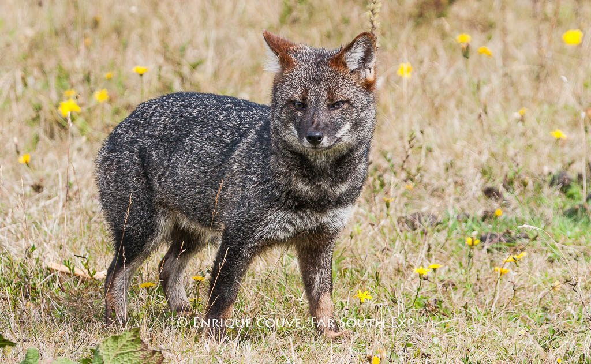

Nuevo Monitoreo Salva a Familia de Zorros Chilotes
La Isla Grande de Chiloé ha sido testigo de un reciente éxito de conservación gracias a la implementación de un nuevo sistema de monitoreo financiado por U Can Save. Este sistema, basado en cámaras trampa de alta resolución, permitió rastrear los movimientos de una familia de zorros de Darwin, una de las especies de cánidos más amenazadas del mundo.
El Santuario "Bosques del Sur" reportó que la tecnología detectó una amenaza inusual en la zona de anidación: un campamento ilegal de tala. La intervención rápida del equipo de guardabosques no solo neutralizó la amenaza, sino que también aseguró que los cachorros de zorro y sus padres permanecieran ilesos en su hábitat. Este evento subraya la importancia de la vigilancia constante.
El Zorro Chilote o Zorro de Darwin, catalogado como en Peligro Crítico, es endémico del sur de Chile. Tu apadrinamiento financia directamente estas tecnologías de monitoreo que son su primera línea de defensa.
¿Quieres asegurar el futuro del zorro chilote? ¡Convierte tu inspiración en acción!
Apadrina un Zorro Chilote Hoy